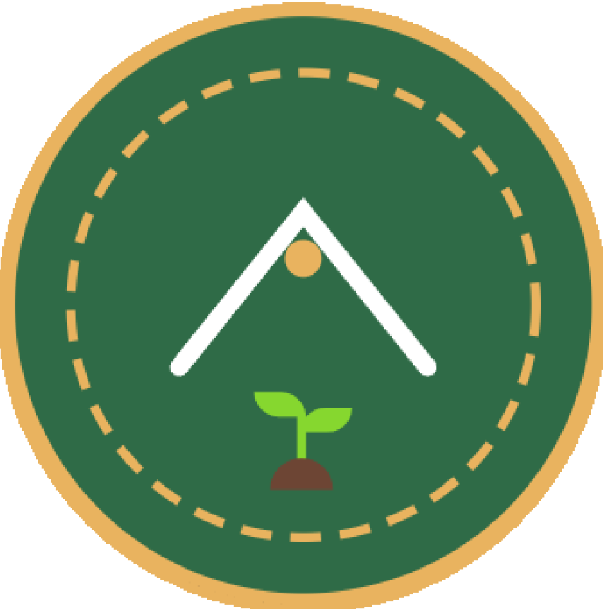
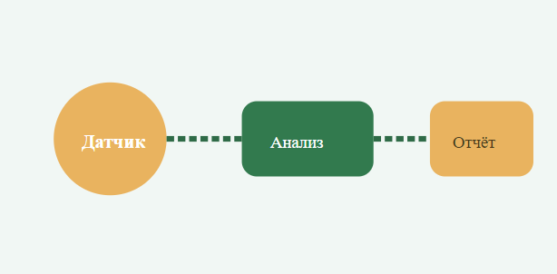

🗓️ 5 апреля 2025
Начало работы: анализ требований
Составлен план проектной деятельности, определены цели и задачи. Выбрана тема экологического мониторинга, проведён обзор существующих решений.

проект по устойчивому развитию микрорайонов
Проектная деятельность | Команда «ЭкоПульс»
Аннотация: Разработка и внедрение системы экологического мониторинга и озеленения в городских микрорайонах. Наш проект объединяет цифровые инструменты, волонтёрство и местные сообщества для снижения углеродного следа и повышения биоразнообразия.
Узнать больше →
«ЭкоПульс» — индивидуальный проект, реализуемый в рамках дисциплины «Проектная деятельность». Цель — создание прототипа системы анализа и улучшения экологической ситуации в жилых кварталах.
Задачи проекта: 1) Разработать интерактивную карту зелёных зон; 2) Провести исследование качества воздуха в пилотном районе; 3) Создать информационный сайт с визуализацией данных; 4) Предложить рекомендации по озеленению.

Целевые показатели улучшения экологии
Над проектом работает один разработчик, выполнивший все этапы проектной деятельности.
Новости, вехи и инсайты работы над проектом «ЭкоПульс»
Составлен план проектной деятельности, определены цели и задачи. Выбрана тема экологического мониторинга, проведён обзор существующих решений.
Создана архитектура HTML-документа, разработаны CSS-стили, подготовлены SVG-графика и медиа-элементы. Реализована адаптивная вёрстка.
Завершено наполнение всех разделов контентом, добавлены ссылки на ресурсы, видео-презентация. Проект готов к защите в рамках дисциплины.

* Блок "Журнал" отражает основные этапы работы над проектом.

Схема сбора и обработки экологических данных